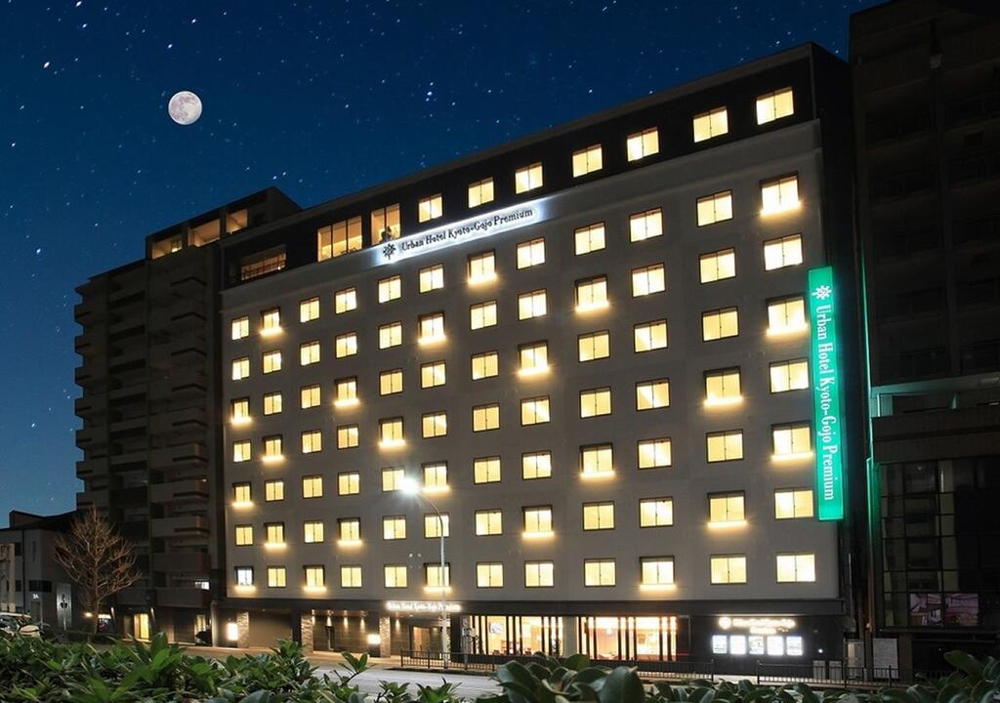

The Urban Hotel Kyoto is a great choice for travelers who want to get around in Kyoto.
Just 15 minutes from Kyoto Station, it is perfectly located for both sightseeing and business,
and offers quick easy access to prime sites like Fushimiinari-taisha Shrine and Kiyomizu-dera Temple.
If you want to relax in the seasonal beauty of Kyoto, stay at the Urban Hotel Kyoto.

For Business or Signtseeing
Urban Hotel Kyoto is located a 12-minute walk from Fushimi Inari Shrine and a 5-minute walk from Ryukokudaimae-Fukakusa Train Station of the Keihan Line. Completely renovated in June 2015, all guestrooms are non-smoking rooms and come with free WiFi access. Parking is also available.
Suites & Rooms
Guest rooms offer both air conditioning and heating facilities. Each room is equipped with a fridge, an electric kettle and a TV with satellite channels. The en suite bathroom comes with toiletries and a hairdryer.
Culinary Delights
All of our dining options have one thing in common, delicious food made from ingredients prepared by our chefs. We proudly source regional and organic products and buy from speciality suppliers to bring our diners the healthiest.
Conference & Events
At Cafe Restaurant Lavender, guests can enjoy carefully prepared buffet breakfast featuring Japanese, Western and Chinese dishes. A variety of local dishes and drinks can be enjoyed for dinner.
Sight Seeing in Kyoto
Kinkaku-Ji The Golden Temple
The image of the temple richly adorned in gold leaf reflects beautifully in the water of Kyokochi, the mirror pond.It is perhaps the most widely-recognized image of Kyoto. Seen reflected in the adjoining "mirror pond" with its small islands of rock and pine, Kinkaku-ji Temple, "The Golden Pavilion," is a breathtaking must-see.The building's first purpose was to serve the retiring Shogun Ashikaga Yoshimitsu (1358-1409) as a residence. The gold-leaf-adorned building was converted into a Zen temple shortly after his death. In an event that was later fictionalized by the renowned author Yukio Mishima, a 21-year-old monk burned Kinkaku-ji Temple down in 1950. The temple was rebuilt in 1955 and continues to function as a storehouse of sacred relics.The temple's garden is also a scenic delight and contains in its grounds a charming teahouse
Fushimi Inari Shrine
Fushimi Inari Shrine (伏見稲荷大社, Fushimi Inari Taisha) is an important Shinto shrine in southern Kyoto. It is famous for its thousands of vermilion torii gates, which straddle a network of trails behind its main buildings. The trails lead into the wooded forest of the sacred Mount Inari, which stands at 233 meters and belongs to the shrine grounds.
Biwa Lake
Lake Biwa is a large freshwater lake in Shiga Prefecture, northeast of Kyoto. It’s known for its abundant fish population, migratory water birds and wetland regions. Its shoreline is home to resorts and beaches like Ōmi-Maiko. Around the lake are historic sites including the 17th-century Hikone castle and the 8th-century Buddhist temple complex Enryaku-ji. Lake Biwa Museum has cultural and natural history exhibits.
Kyomizu Dera Temple
Kiyomizudera (清水寺, literally "Pure Water Temple") is one of the most celebrated temples of Japan. It was founded in 780 on the site of the Otowa Waterfall in the wooded hills east of Kyoto, and derives its name from the fall's pure waters. The temple was originally associated with the Hosso sect, one of the oldest schools within Japanese Buddhism, but formed its own Kita Hosso sect in 1965. In 1994, the temple was added to the list of UNESCO world heritage sites.